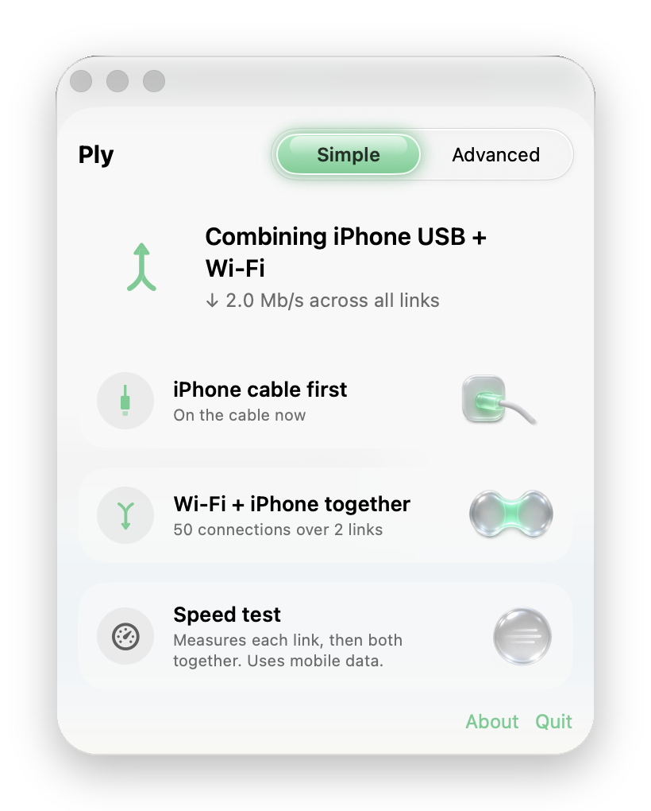

Ply is a free, open-source menu bar app for Mac. It keeps your Mac on the iPhone cable instead of flaky Wi-Fi, and can spread your traffic across Wi-Fi and the iPhone together. No VPN, no account, no server.
Or brew install mustafaTokmak/tap/ply
macOS 13 or later · Apple Silicon and Intel · MIT licensed

macOS uses one network at a time, and it picks whichever service is first in a list you never see. Ply fixes that.
Ply moves iPhone USB above Wi-Fi and turns off macOS's "Disable unless needed" for it, so plugging in actually switches you over. It also leaves the iPhone's Wi-Fi hotspot when the cable is up, and can turn Wi-Fi off while you're cabled.
A local proxy sends each new connection over the least-loaded link with internet: Wi-Fi, iPhone, Ethernet. Pages with many requests, downloads and uploads get the bandwidth of all of them.
"iPhone is plugged in but not sharing." "Wi-Fi is above iPhone USB." Every problem comes with a one-click fix, plus a ready-to-paste prompt for your AI agent.
The limits are listed here up front.
apps (Safari, Chrome, ...) │ macOS auto-proxy ▼ Ply on 127.0.0.1 │ one link per connection ├──► Wi-Fi ───────► internet └──► iPhone USB ──► internet
Every button in the menu is also a CLI command, a local HTTP endpoint and an MCP tool, all generated from one action list. A test fails the build if the UI gets a button agents can't use. Docs for agents: llms.txt · llms-full.txt · SKILL.md.
ply status # which link, live speeds ply diagnose # what's wrong + the fix ply prefer-usb # cable above Wi-Fi ply combine on # use every link ply speedtest # each link vs together # MCP (stdio) claude mcp add ply -- ply mcp
My Mac has the open-source app Ply installed (https://github.com/mustafaTokmak/ply). Use its CLI (`ply ... --json`) or its MCP server (`ply mcp`). First run `ply diagnose --json` and fix each finding in order using the action it names. Ask me before installing the helper, turning Wi-Fi off or running a speed test (it uses mobile data). Then run `ply status --json` and tell me which link my Mac is using.
Two reasons. macOS uses the first connected service in an ordered list, and "iPhone USB" usually lands below Wi-Fi. And iPhone USB has a "Disable unless needed" switch, on by default, that keeps the cable idle while Wi-Fi works. Ply fixes both (one admin password, once).
Exactly six things: report its version, reorder existing network services, point auto-proxy at Ply's own 127.0.0.1 PAC file (backing up your settings), restore them, turn one service off and on, and turn off "Disable unless needed" for iPhone USB. It runs no shell commands. The code is short and open.
The proxy config ends in DIRECT, so browsers fall back to a normal connection. Ply also restores your proxy settings when it quits and again the next time it starts.
iPad USB works like iPhone USB. Android phones that appear as a USB Ethernet device work once you add the interface name in settings.
Yes, MIT licensed, no account, no telemetry.